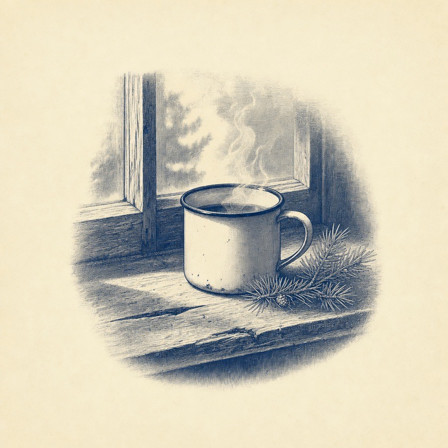
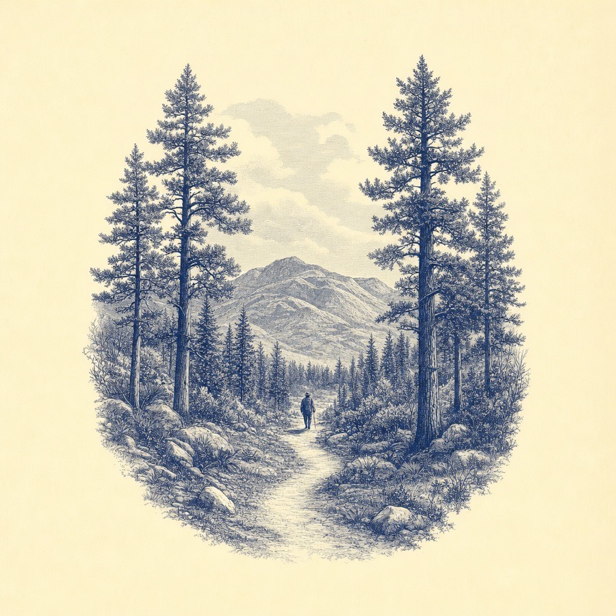
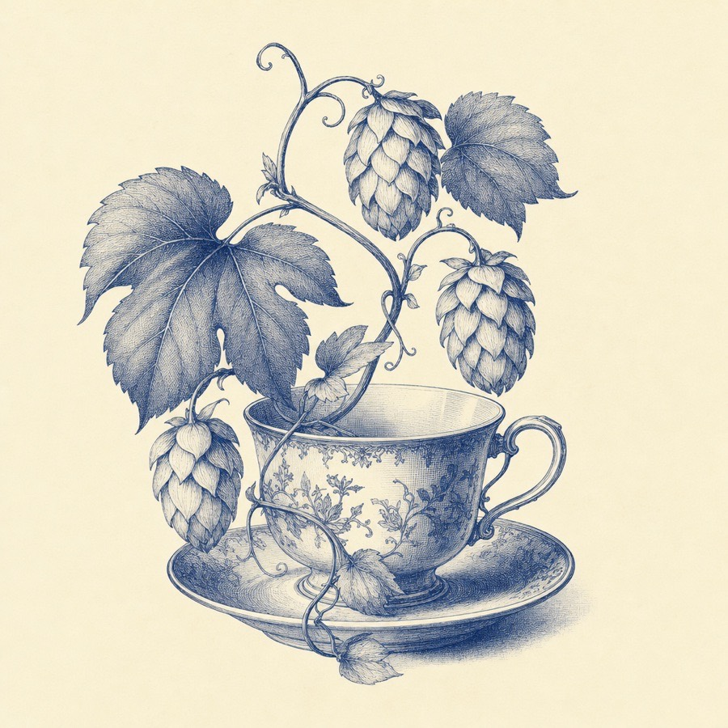
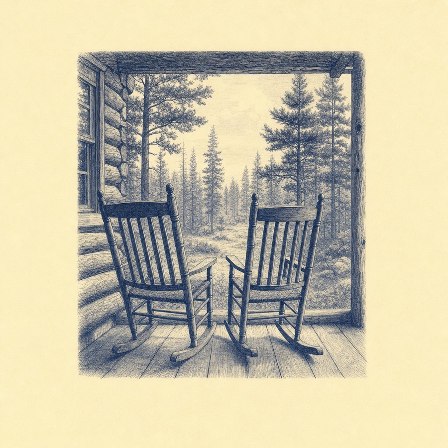
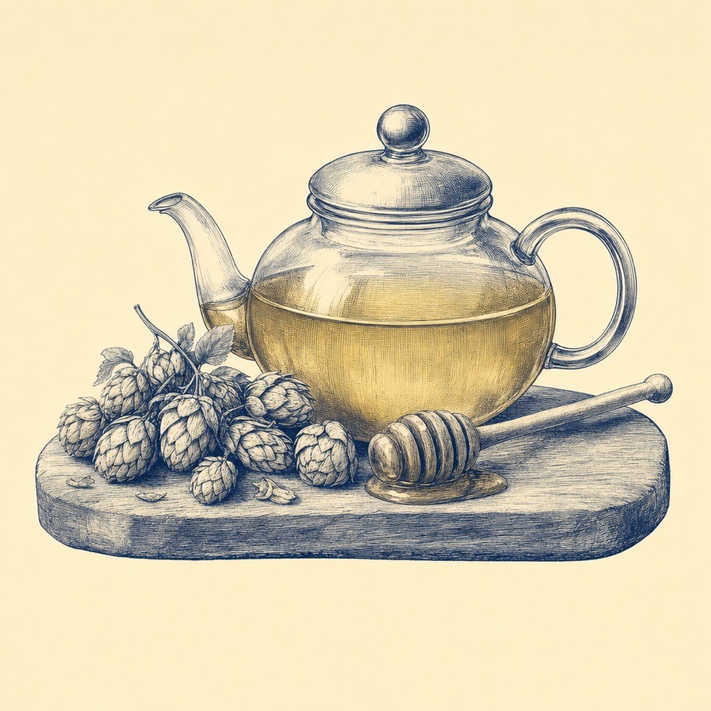
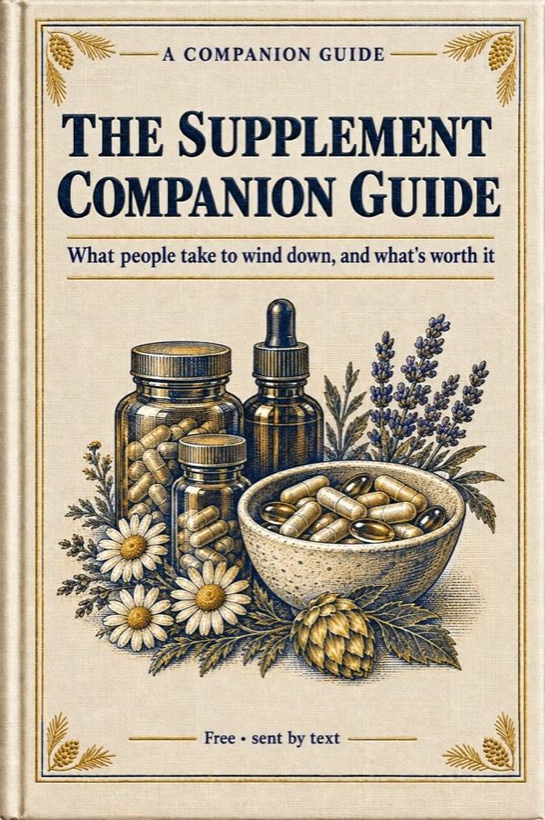

Start here
Every habit in the next four weeks goes on something you already do. You turn off your alarm, pour your coffee, start the car and brush your teeth every day without thinking about it, so each new habit hangs on one of those and there's nothing new to remember.
Each one comes with an anchor sentence. Say it once, out loud if you can, and the next time you do the old thing, the new one follows it.
How the month goes
- Add one new habit every two or three days, three a week, so you have twelve by the end of week four.
- Keep the ones from before as you add the next. By week four they stack into your whole day.
- Miss a day and pick it back up the next. A habit that slips was hung on the wrong moment, so move it to a better one.
- Every night, write three lines in the sleep diary at the back. It takes about a minute.
None of these habits are new. A Bavarian priest swore by cold water in the 1800s, the Psalms were sung at set hours in Jerusalem, and in ancient China people painted their stretches on silk, all long before anyone had a name for the nerve.
The wandering nerve
Vagus is Latin for wandering. The vagus nerve starts at the base of your brain and wanders down through your neck to your heart, your lungs and your gut, which is why stress shows up in all three: the tight chest, the short breaths, the stomach in knots.
One of its jobs is slowing your heart down.
History The Greek doctor Galen described the nerve in Rome about 1,900 years ago. In 1921 Otto Loewi, by his own account, dreamed up an experiment, woke around 3 a.m. and went straight to his lab. He slowed a frog's heart through its vagus nerve, moved the fluid around it to a second heart, and the second heart slowed too. The nerve was talking to the heart with a chemical. He called it "Vagusstoff", vagus stuff, and shared the Nobel Prize for it in 1936.
The part you can steer
You can't will your heart to slow down. You can steer your breath. Your heart speeds up a little each time you breathe in and slows a little each time you breathe out, so a long, slow breath out gives it more time to slow.
Most of the habits ahead lean on that slow breath out. The rest use cool water, fresh air, a song or another person. Over a month, they add up to a few calm minutes many times a day.
If you have a heart condition, a history of fainting, or you're pregnant, check with your doctor before the cold water and the breathing habits.
Week one: mornings

Five slow breaths before you pick up your phone, 30 seconds of cool water at the end of your shower, and three quiet minutes with your coffee.
Five slow breaths before your phone
- Stay lying down. Breathe in through your nose for a count of four.
- Breathe out through your mouth, slowly, for a count of six.
- Do it five times, then reach for the phone.
History An old Chinese saying comes from breathing exercises written about over 2,000 years ago: breathe out the stale, breathe in the fresh.
Cool water at the end of your shower
- Turn the tap to cool but comfortable. Start with 10 seconds if 30 is too much.
- Let it run over your face for the last few seconds and breathe out slowly.
- Step out and dry off.
History Father Sebastian Kneipp, a Bavarian priest, made cold water famous in the 1800s. He credited icy winter dips in the Danube with his recovery from tuberculosis as a young man.
What's known Cool water on the face sets off the diving reflex, which slows the heart within seconds. It's the same reflex seals use to dive, and it's in the medical textbooks.
Three quiet minutes with your coffee
- Sit somewhere you can see out a window, if you have one.
- Breathe, pray, or just sit. Hold the warm mug and let your breathing slow down.
- When your mind wanders to the day ahead, bring it back to the cup.
History A Chinese book over 2,000 years old, the Tao Te Ching, asks: "Who can make the muddy water clear? Let it be still, and it will gradually become clear." (After James Legge's 1891 translation.)
Week two: the workday

Hum or sing one song on the drive, walk outside after lunch, and drop your shoulders every time you stand up.
Hum or sing one song on the drive
- Pick a song you know by heart: a hymn, an old favourite, anything slow.
- Sing it or hum it all the way through. Nobody can hear you.
- Notice how long each line makes you breathe out.
History People have sung the Psalms and prayed at set hours for about 3,000 years. "Evening, and morning, and at noon, will I pray." (Psalm 55:17) In India, a breathing practice written down in the 1400s is named after the bee: you breathe out slowly while humming.
What's known In a six-month study of 520 teenagers in India, the ones who practised the humming bee breath showed heart rhythm patterns linked with a calmer body (Integrative Medicine Research, 2020).
A walk outside after lunch
- Head for the nearest trees: a park, a tree-lined street, the edge of the parking lot.
- Leave the earbuds in your pocket and walk at an easy pace.
- Come back in when the ten minutes are up.
History Japan's forestry agency coined "forest bathing" in 1982, to get people walking among trees.
What's known In studies across 24 forests in Japan, with 280 people, a walk among trees lowered stress hormones, pulse and blood pressure compared with a walk in the city (Environmental Health and Preventive Medicine, 2010).
Drop your shoulders when you stand
- Lift your shoulders up toward your ears, then let them fall.
- Tip your head slowly to one side, then the other.
- Breathe out as you do it.
History Since 1928, people across Japan have done the same few minutes of morning stretches to a radio broadcast. The idea came from an American insurance company's radio exercise show.
Week three: evenings

Screens away after dinner, legs up the wall after you brush your teeth, and in for 4, out for 6 once your head is on the pillow.
Screens away after dinner
- Plug the phone in somewhere you can't reach from the couch or the bed.
- Turn the lights down a little for the rest of the evening.
- If you like a warm drink, make it caffeine free. There's a recipe for an old evening tea near the end of this guide.
History A day set aside for rest goes back to the Ten Commandments: "Remember the sabbath day, to keep it holy." (Exodus 20:8)
What's known When eight people spent a week camping with only natural light, their body clocks moved about two hours earlier (Current Biology, 2013). Morning light sets your body clock, and bright light late at night pushes it later.
Legs up the wall
- Sit sideways next to a wall, then swing your legs up it as you lie back.
- Rest your arms by your sides and breathe slowly for three minutes.
- If it pinches anywhere, put a pillow under your hips or just prop your feet on the couch.
History People in ancient China drew a chart of stretches over 2,000 years ago. The painted silk, with 44 people bending and reaching, was buried in a tomb in 168 BC and found in 1973.
What's known Raising the legs sends blood back toward the heart. In a small 2024 study in the Journal of Physiological Sciences, it eased the body's fight or flight nerve signals.
In for 4, out for 6
- Breathe in through your nose for a count of four.
- Breathe out slowly for a count of six.
- Keep going. If your mind wanders, start the count again.
History Around 1,500 years ago a Chinese scholar, Tao Hongjing, wrote that we breathe in only one way but can breathe out in six. Slow, repeated prayer, from the rosary to the Jesus Prayer of the Eastern church, sets the same slow pace.
What's known In for 4 and out for 6 is six breaths a minute. In a 2001 study in the BMJ, slow, repeated prayer slowed people's breathing to about six a minute, and their heart rhythms rose and fell with it. In a 2023 Stanford study, five minutes a day of long, slow breaths out lifted people's mood over a month.
Week four: people

Call or text one person on your drive home, then read back your sleep diary on Sunday and keep the habits that worked.
Call or text one person
- Pick someone before you leave: a friend, a sister, your mom.
- Call if you're driving hands free, or text once you're parked.
- Ask how they're doing, and listen to the answer.
History "A merry heart doeth good like a medicine." (Proverbs 17:22)
What's known When a choir sings together, their heartbeats start to rise and fall together (a small study at the University of Gothenburg in Sweden, 2013).
Read back the diary on Sunday
- Look for the nights you slept best. What did you do that day?
- Look for the nights you slept worst. What was different?
- Circle anything that showed up more than once.
History Almost 2,000 years ago the Roman writer Seneca went over his whole day every night once the lamp was out. "How sweet is the sleep which follows this self-examination?" (Aubrey Stewart's 1900 translation.)
What's known Sleep doctors ask their patients to keep a diary like this one. In 2012 the leading sleep researchers agreed on one standard version, the Consensus Sleep Diary.
Keep the habits that worked
- Read back all four weeks of the diary.
- Keep the habits that fit your day. Drop the ones that never did.
- Copy the keepers onto the whole stack, which comes next, and put it on the fridge.
The whole stack
For the fridge door
| Week | Anchor | Habit |
|---|---|---|
| 1 | After I turn off my alarm | Five slow breaths before I pick up my phone |
| 1 | After I wash my hair | Cool water for the last 30 seconds |
| 1 | After I pour my coffee | Three quiet minutes: breathe, pray, or just sit |
| 2 | After I start the car | Hum or sing along to one song |
| 2 | After I finish lunch | A ten-minute walk outside |
| 2 | After I stand up from my desk | Drop my shoulders and roll my neck once |
| 3 | After I clear the dinner plates | Phone on the charger in another room |
| 3 | After I brush my teeth | Legs up the wall for three minutes |
| 3 | After I put my head on the pillow | In for 4, out for 6 |
| 4 | After I leave work | Call or text one person |
| 4 | After I pour my Sunday coffee | Read back the week in my sleep diary |
| 4 | On day 28 | Pick the habits to keep |
| Every night | Before bed | Three lines in the sleep diary |
The sleep diary
Fill in three lines every night before bed, about last night and this morning. It takes about a minute, and on Sundays you read the week back.
Write down the habits you did that day too, so you can see what lines up with your better nights.
What you type stays on this phone or computer. Rather write it by hand? Print the diary pages.
Bonus recipe: an old evening tea

Hops are the green cones that give beer its bitter taste. Long before anyone brewed with them on purpose, people steeped them for tea in the evening. Europe's medicines agency still lists hops as a traditional herbal medicine for mild stress and to help with sleep, based on long use rather than trials.
You'll need
- 0.5 to 1 gram of dried hop cones. Half a gram is roughly one to two loose teaspoons; the cones are very light, so weigh them if you can. Home brewing shops and herb shops sell them.
- 150 to 200 ml of boiling water, about two thirds of a cup to a little under a cup.
- Honey, to taste.
How to make it
- Put the hops in a mug and pour the boiling water over them.
- Cover the mug and let it steep for 10 to 15 minutes, then strain.
- Stir in honey and drink it 30 to 60 minutes before bed.
It's very bitter. Honey helps, and some people add a little chamomile or lemon balm.
History Hop pickers in old Europe were said to get drowsy in the fields, and legend has it that's how hops earned their name as a sleep herb. By 1905 a German doctor was recommending hop pillows and hop tea for restless sleep. Not everyone was a fan: the 12th-century abbess Hildegard of Bingen thought hops made people gloomy.
The 10 to 15 minute steep is common herbal practice; the dose and timing follow the European Medicines Agency's hops monograph (2014).
Old sleep myths
People have been passing down ways to fall asleep for centuries, and here's what's known about four of the best loved.
Counting sheep
Nobody's sure where it started, but people have been told to count sheep for generations.
What's known In a 2002 Oxford study of people with insomnia, imagining a calm scene, like a beach or a waterfall, helped them fall asleep about 20 minutes sooner. Counting sheep didn't help.
A glass of warm milk
Grandmothers swore by it.
What's known Milk does contain tryptophan, which the body uses to make the sleep hormone melatonin, but there's very little research showing a glass of milk changes how you sleep. A warm, caffeine-free drink at the same time each night is a fine habit anyway.
The nightcap
A small drink before bed was supposed to help you sleep.
What's known Alcohol does help people fall asleep faster. A 2013 review of 27 studies (Alcoholism: Clinical and Experimental Research) found it disrupts sleep in the second half of the night.
The hop pillow
Legend has it King George III was bedded on a pillow stuffed with hops to calm him, and German doctors were recommending hop pillows by 1905.
What's known A small 2001 study of herbal pillows filled with hops, lemon balm and lavender, in 30 people, found only a slight trend toward better sleep.
What's next
If you'd like to know which supplements are worth your money for everyday stress and winding down, there's a free companion guide. It grades the popular ones, from magnesium and melatonin to ashwagandha and chamomile, as Worth it, Worth a try, Thin or Skip, and it shows you how to read a label in 60 seconds.

Free supplement companion guide
+ info on the hops drop I use
🎁 YES! Text me the guide + product infoBoth sent to you by text.
The fine print
This guide is general wellness information for educational purposes only. It isn't medical advice, and nothing in it diagnoses, treats, cures or prevents any condition.
If you've slept poorly for more than a few weeks, snore loudly, or wake up gasping, see your doctor.
Talk to your doctor before starting any new routine or herbal tea if you're pregnant or nursing, have a medical condition, or take any medication.
Individual results vary.